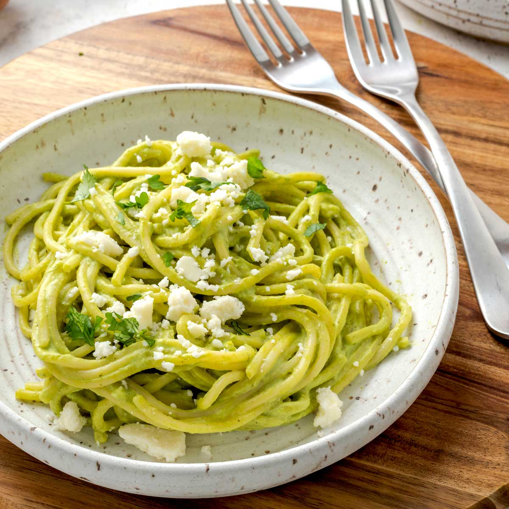

Home
Espagueti Verde

Description
Espagueti Verde is a Mexican green spaghetti with
a silky smooth, roasted poblano and jalapeño sauce.
This creamy pasta dish is amazing as a side dish and
a meatless meal, plus easily make it gluten-free.
Ingredients
- Poblano Chiles
- Jalapeño
- Onion
- Garlic
- Butter
- Cream Cheese
- Sour Cream
- Heavy Cream
- Chicken Broth
- Cilantro
- Pasta
- Queso Fresco
- Salt and Pepper
Steps
- Roast the Chiles
- Sauté the Onions and Garlic
- Make the Sauce
- Boil the Noodles
- Assemble Pasta
- Serve